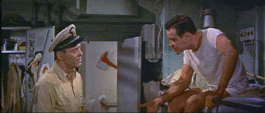

Warner/1955/122/2.35 ANA
John Ford directed only about half of Mister Roberts before becoming ill. Try as he might the movie remains bound by its stage origins. There is little flow to the action. Mervyn LeRoy who took over from Ford did his best to keep the movie on an even kilter. There’s never a sense that two different hands were guiding the movie. Even the original stage director Josh Logan got to directs a couple scenes in reshoots. The comic elements of the crew positively play like something out of a Broadway musical. That means the chief attraction of Mister Roberts is watching some great pros act.
 |
Pulver schemes as Roberts listens ©Warner |
Henry Fonda repeats
his stage success in the title role of Mister Roberts. Fonda’s easy, laconic
style is well suited to Roberts and his portrait is sympathetic. Jack Lemmon is decidedly
the most fun as Ensign Frank Pulver. Whether singing a 1940s ditty to himself or planning
a new attack on the Captain’s sanctity, Lemmon injects energy into the otherwise
lethargic proceedings. William Powell, the erudite interpreter of Nick Charles in The
Thin Man, makes his final screen appearance as Doc. Powell’s cynical world-weary
delivery is a delight and a welcome compliment to Lemmon’s silliness. James Cagney
goes overboard with his posturing as the captain. His vision is narrowed to a corridor
somewhere between the cargo hold and his potted palm. His explosions are deadpan
slapstick, but Cagney is always fun to watch.
Jack Lemmon provides commentary on an alternate audio track.
It’s a privilege to share Lemmon’s memories of the shoot and the actors. It may
not be the best of commentaries, but Lemmon’s stature makes up for whatever it lacks.
His commentary builds nicely. In the early scenes, it’s spotty and repetitive, but as
he relaxes through the experience, there are some excellent stories. While he is mostly
complimentary about the principals involved in Mr. Roberts, he does criticize a
technique of director John Ford’s. Ford liked to trick actors into getting
performances out of them. Lemmon resents this device, but he relates a story about Victor
McLaglen in The Informer and how Ford set him up for a great performance. McLaglen
won the Academy Award as Best Actor for the role. There’s no question that Lemmon
holds the stars of Mr. Roberts in high esteem as he reminisces about their varied
professional styles. There are gaps in the commentary throughout the DVD, but a narrator
instructs you to move to the chapter where commentary is picked up again. There’s a
huge gap from chapter 16 to chapter 32 with no commentary. On side two of the DVD there is
a short remembrance of Henry Fonda narrated by Jane Fonda and also a tape of an appearance
of the principals of Mister Roberts on the Ed Sullivan Show.
Presented in 2.35 anamorphic widescreen, Mister Roberts is
a welcome addition to the DVD library. Historically, the film boasts several screen
legends as part of the cast. Warner Home Video should be commended on making a new
transfer of the film for DVD. The source material for the transfer is quite good. Some
scenes are a bit too grainy, but the overall look is pleasing. The transfer never injects
itself between the viewer and the film. Images are reasonably sharp, colors adequately
saturated. The soundtrack has been remastered in Dolby Digital 5:1. Dialogue is easy to
understand and the Franz Waxman score, though not extensive, sounds fine.